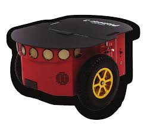
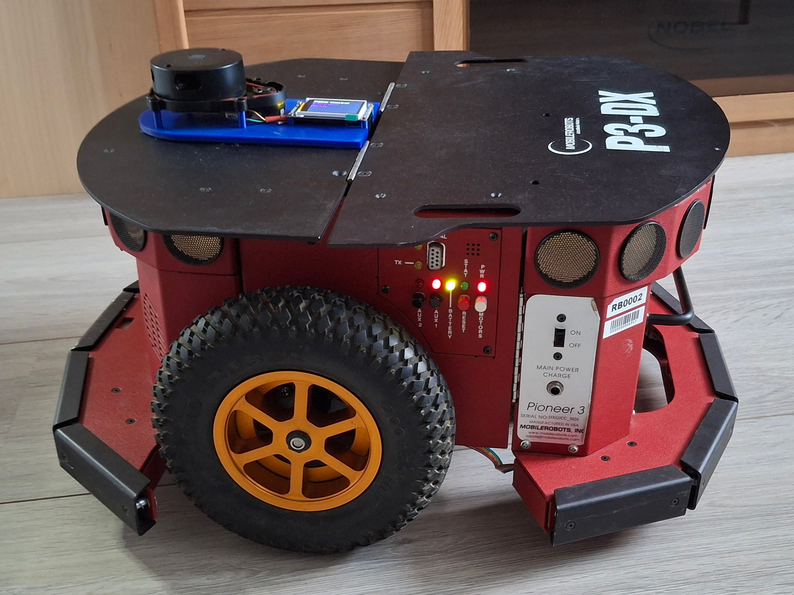
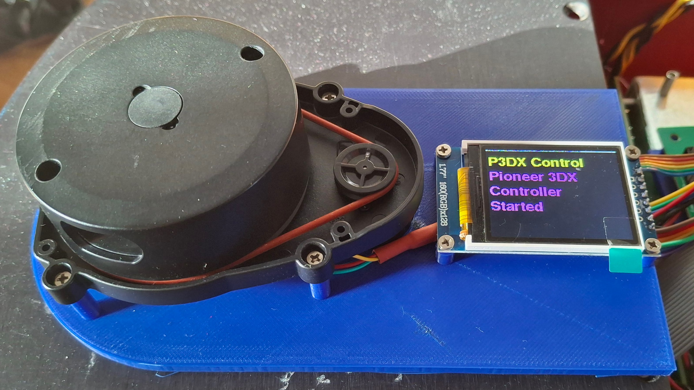
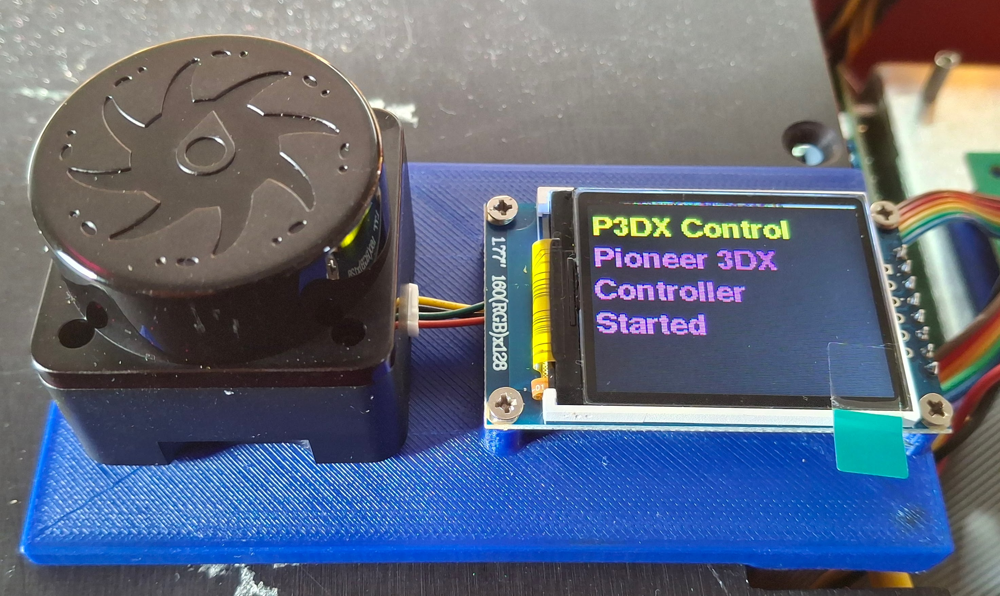
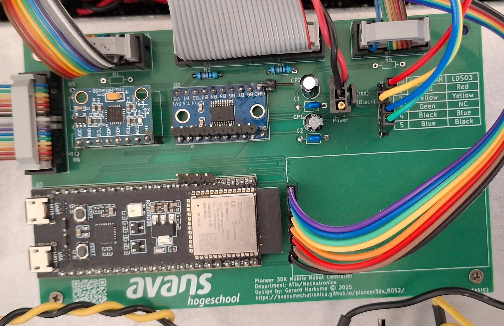

Inleiding

Originele Pioneer P3DX robot
In deze documentatie wordt beschreven hoe een Pioneer 3DX robot (aangeduid als P3DX-robot), een ontwerp uit 2007, kan worden omgebouwd tot een robot die geschikt is om te besturen met het ROS2 jazzy systeem. De basis is hiervoor een nieuw processorbord gebaseerd op een ESP32-S3-N16R8 processor
De P3DX-robot heeft de volgende eigenschappen:
Bestaand processorboard is vervangen door nieuw processorboard gebaseerd op een ESP32-S3-N16R8 processor
1.77” status display
Beperkte functionaliteit van het bestaande controle paneel.
De P3DX-robot communiceert met host-computer d.m.v. een MicroROS agent gebruik makend van 1 de volgende twee MicroROS protocollen
Serial
Wifi
Besturen met een z.g.n. cmd_vel topic (twist.geometry_msgs.msg)
Op de robot zijn de volgende sensoren aanwezig:
Lidar, topic /scan
Imu, topic /imu
Odometer, topics /odom/unfiltered & /odom/filtered
Bumpers, topics /p3dx/status
De robot kan worden gereset met het /p3dx/reset (bool) topic.
Een grafische user interface is voor raadplegen status en resetten van de p3dx-robot

Gemodificeerde P3DX-robot met lidar en 1.77” status display.

Met LDS08 lidar
Met YD-T mini lidar
Nieuw processorboard gebaseerd op een ESP32-S3-N16R8 processor.In deze documentatie worden de benodigde stappen, configuraties en voorbeeldcommando’s beschreven om de robot in gebruik te nemen met ROS2 Jazzy.
Tevens wordt beschreven hoe een bestaande robot kan worden omgebouwd. Alle tekeningen en bijbehorende documentatie zijn beschikbaar in de github repository.
Notitie
Je kunt de robot gebruiken in wifi of usb modes. De wifi mode is handig als je de robot op afstand wilt bedienen, terwijl de usb mode handig is voor directe verbinding en debugging. Alvorens je de robot voor 1 van beide modes kunt gebruiken, moet je de robot eerst te programmeren met de juiste firmware. Zie hiervoor de firmware installatie instructies